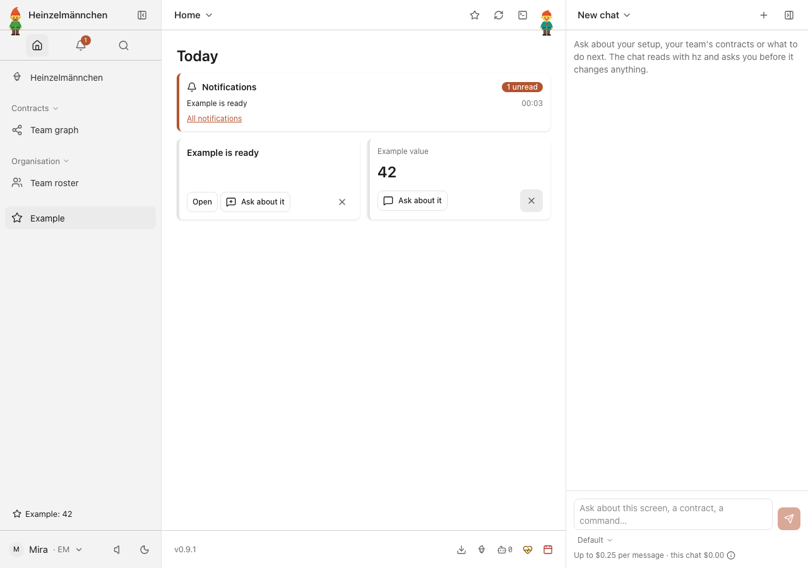
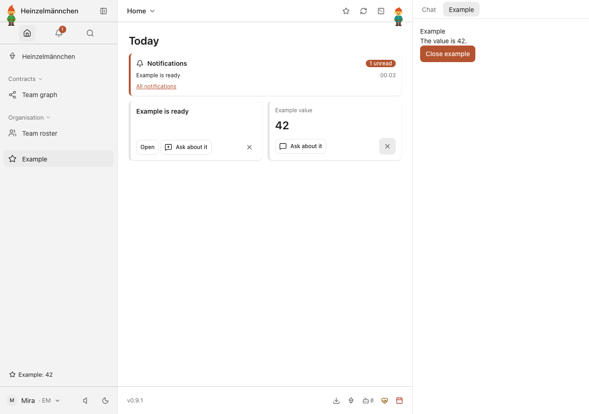
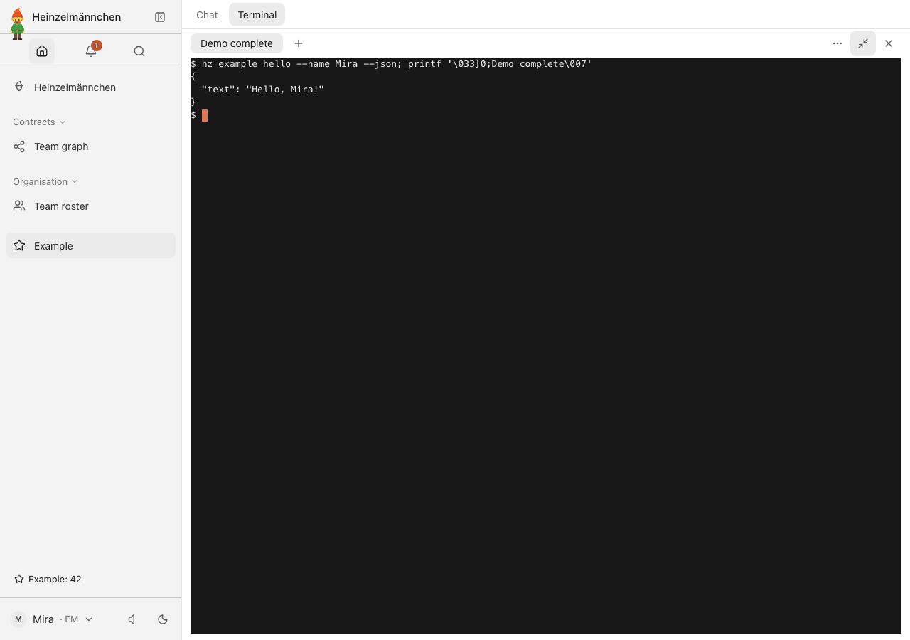
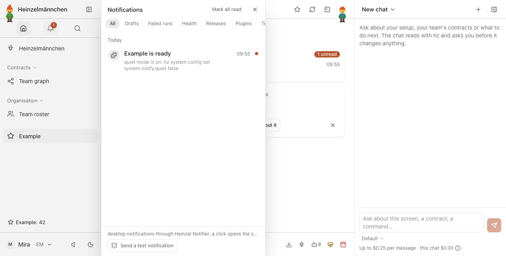
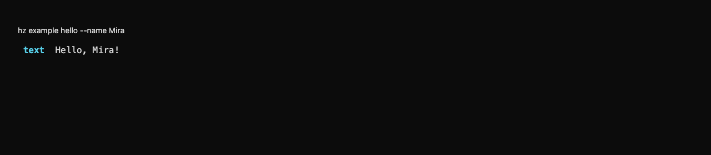
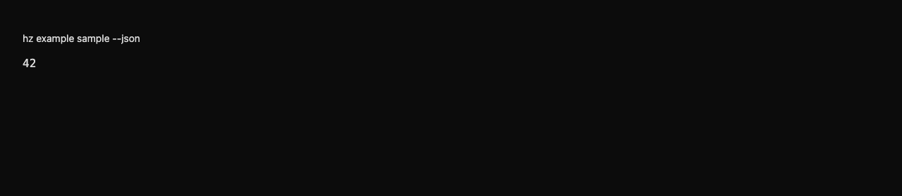

heinzel-example
Isolated demonstration profile · Core 0.9.1 · Review these captures before committing. Click an image to inspect it at full size.

UI · One tiny plugin contributes a Today widget and sidebar status from the same value
UI · Open the plugin-owned inspector and read the same value 42
UI · The same typed greeting as structured output in the real app terminal
UI · A plugin notice in the shared in-app notification panel — isolated demonstration
CLI · A typed plugin operation greets Mira from the CLI
CLI · The typed value behind the widget, status and inspector